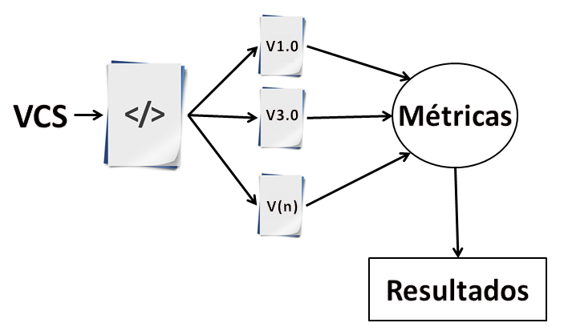

O principal objetivo deste trabalho é identificar como as métricas de software evoluem em um repositório de código, assim sendo possível mensurar a qualidade dos projetos de software e prover uma ferramenta que torne estas informações úteis para o desenvolvedor.
|  |
Inicialmente será realizado um levantamento bibliográfico sobre métricas, evolução e qualidade de software para melhor direcionar a execução deste trabalho.
Posteriormente, serão obtidos, a partir de um sistema de controle de versão (VCS - Version Control System), o projeto que será a base para os estudos e algumas de suas versões que estarão disponíveis no repositório de códigos, para em seguida, extrair as métricas necessárias e realizar a análise destas a fim de inferir sobre a qualidade do código estudado.
Para cada versão disponível no repositório as métricas, que serão extraídas automaticamente, serão analisadas e os dados serão armazenados em um banco de dados ou em uma planilha online para estudos posteriores. Será realizada uma análise estatística com os dados levantados para identificarmos quais características e fatores sobre a qualidade podem ser inferidas através das métricas escolhidas.
Ao final, espera-se o desenvolvimento de uma ferramenta que torne possível a visualização acerca da qualidade do código de um projeto de software que esteja sendo desenvolvido. Nesta etapa, será implementado um plugin para auxiliar o desenvolvedor.